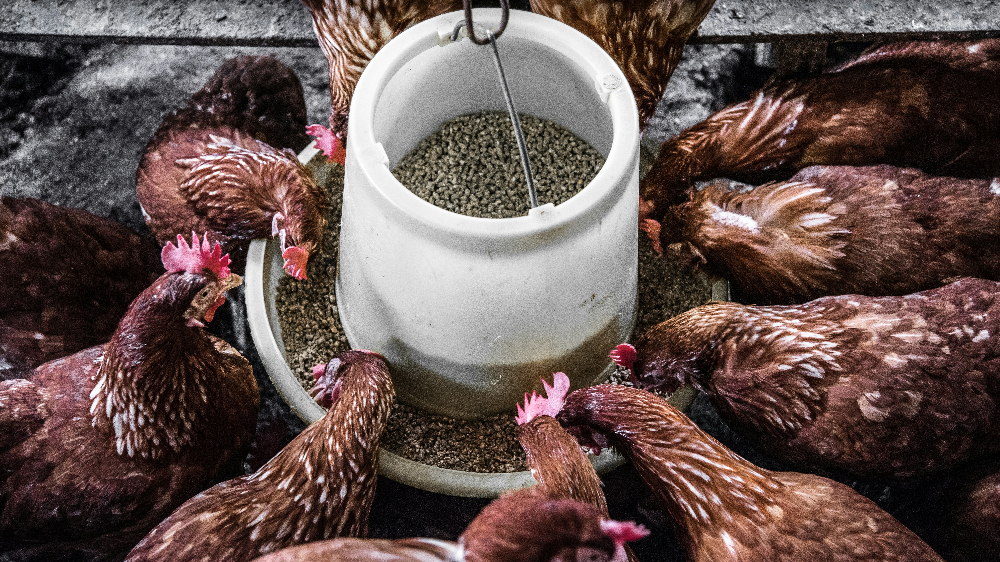
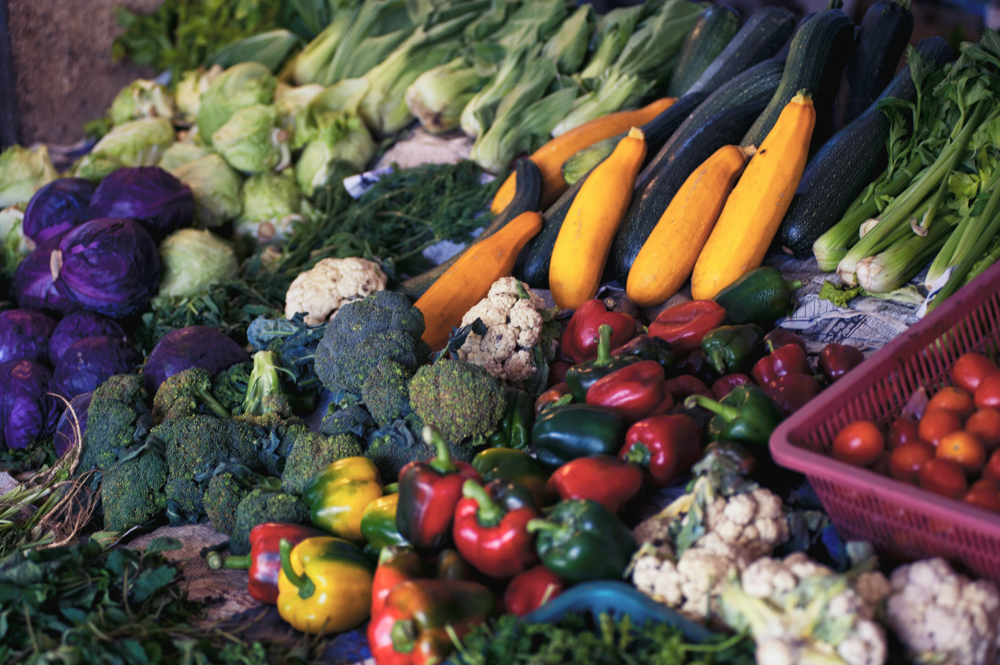
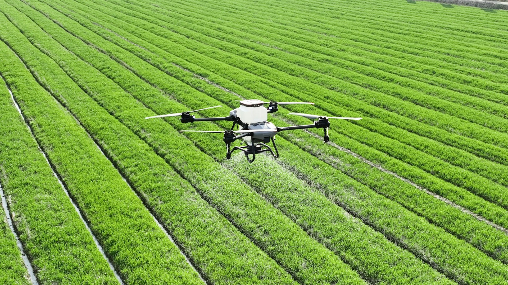
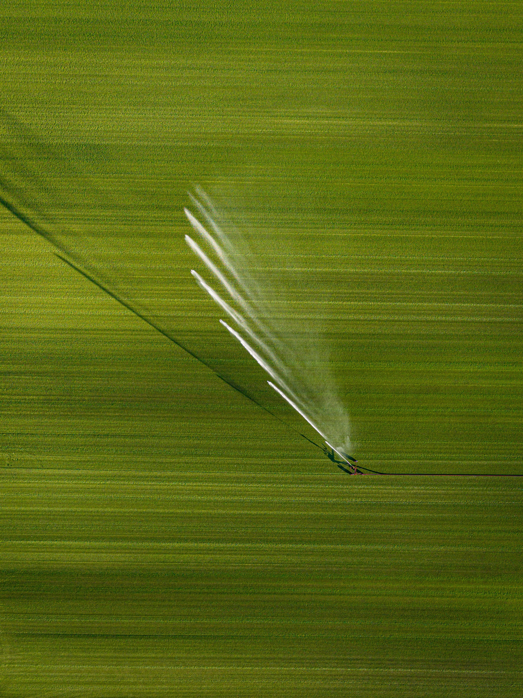
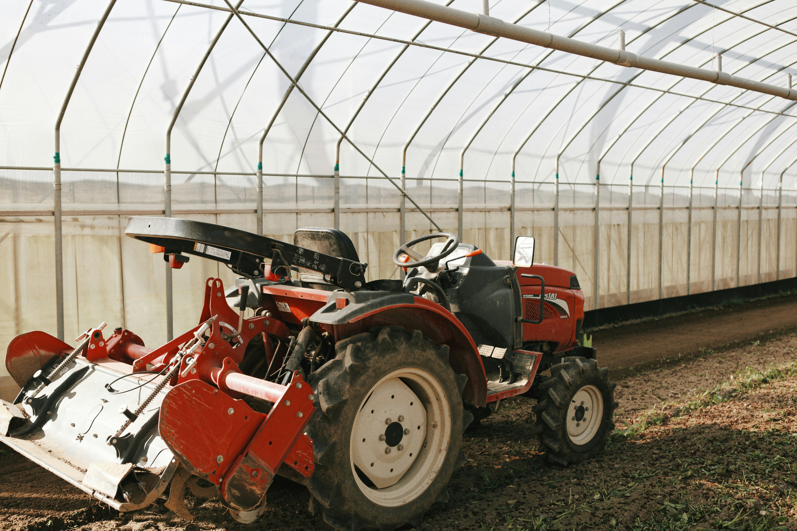

Explore the fields
Walk through active crop fields and see how smart agriculture works in real time - from seed to harvest
Goodlife Farms combines modern agriculture technology with sustainable farming pratices to grow healthier, fresher, and higher-quality produce for families and businesses. order fresh products
REDUCTION IN MANUAL FIELD WORK
HIGHER CROP YIELD THAN CONVETIONAL
INCREASE IN CUSTOMERS RETENTION
TRANSPARANT
TRACABILITY
Goodlife Farms is committed to providing the highest quality, sustainably grown produce while utilizing innovative agricultural techniques to ensure both environmental responsibility and exceptional taste.
We use cutting-edge technology to optimize crop growth, monitor soil health, and enhance sustainability.
Automated irrigation systems to ensure optimal water usage and minimize waste.
Responsible farming practices to ensure the health and well-being of our crops and the environment.
Utilizing analytics and data to make informed decisions about crop management and resource allocation.
We cultivate a wide range of organic vegetables and fruits, free from harmful pesticides and chemicals.
From farm to table, we ensure full transparency and traceability of our products.
Discover a variety of fresh-farm products cultivated using modern agricultural practices

Premium-quality fruits cultivated throughout the growing seasons. sweeet and juicy
price / gram
Premium-quality Birds well fed throughout the breeding seasons. filled with nutrients
price / gram
Naturally grown vegetables harvested at peak freshness. crisp, chemical-free.
price / gramWalk through active crop fields and see how smart agriculture works in real time - from seed to harvest
Discover automated irrigation, real-time sensors, and data-driven farming that makes every drop count.
Chat with our farmers, ask anything about sustainable methods, and transparancy in action.
Goodlife Farms utilizez advanced farming equipment and intelligent systems to improve crops and animal healths, optimize resources, and increase productivity. Our focus also extends to giving you the best products on our Green Earth

Data-driven decisionat plant level using satalite imagery,sensors, AI optimization processes

Smart irrigation system use real-time data to deliver precise water where crops need it most.

GPS-guided machinery and drones improve precision while reducing fuel, labor, and soil impact.

Real-time dashboard tracks crop health, irrigation, equipment, and weather dara from anywhere